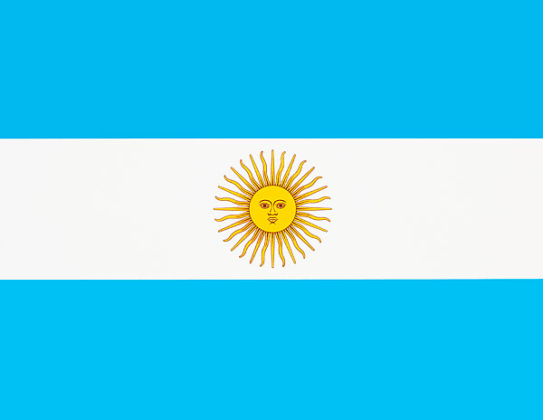
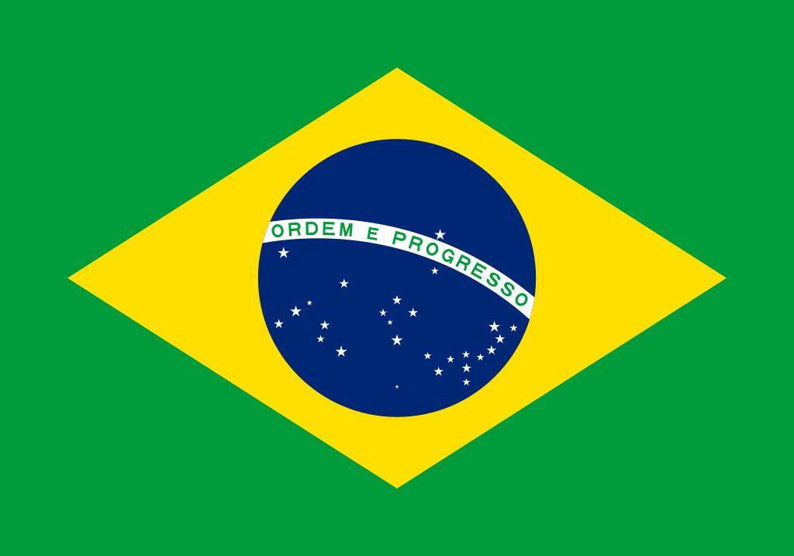

| 1930 | 乌拉圭 |
| 1934 | 意大利 |
| 1938 | 意大利 |
| 1950 | 乌拉圭 |
| 1954 | 联邦德国 |
| 1958 | 巴西 |
| 1962 | 巴西 |
| 1966 | 英格兰 |
| 1970 | 巴西 |
| 1974 | 联邦德国 |
| 1978 | 阿根廷 |
| 1982 | 意大利 |
| 1986 | 阿根廷 |
| 1990 | 联邦德国 |
| 1994 | 巴西 |
| 1998 | 法国 |
| 2002 | 巴西 |
| 2006 | 意大利 |
| 2010 | 西班牙 |
| 2014 | 德国 |
| 2018 | 法国 |
-
本次世界杯的夺冠热门
阿根廷，此前国际比赛34场保持不败 法国，上届世界杯的卫冕冠军
-

五星巴西，获得过五次世界杯冠军 西班牙，老牌强队，此次冠军的有力争夺者